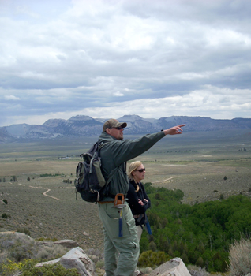

Andrew Connolly
M.S. Student
Education
B.S. Geology, University of Kansas, 2012
Advisors
Dr. Stephen Hasiotis
Research
I am interested in the biogeographic range of Mosasaurs, as well as the paleobiogeographical effects of the parietal foramen in Mosasaurs and Permian reptiles.

M.S. Student
Education
B.S. Geology, University of Cincinnati, 2013
Advisor
Dr. Stephen Hasiotis
Research
My project involves using ichnofossils and paleosols to investigate climate change during the deposition of the Upper Triassic Chinle Formation in Stevens Canyon, Utah. I am also interested in combining traces and paleosols into ichnopedofacies that will help in interpreting continental environments of deposition.
Publications
Hasiotis, S., Fischer, S., 2014. “New Interpretation for Very Large Diameter Burrows in the Petrified Forest Member, Upper Triassic Chinle Formation, Near Canyonlands National Park, Southeastern Utah: Therapsid Burrows?” Poster presentation, Geological Society of America Annual Meeting, Vancouver, British Columbia, Canada
Fischer, S., Hasiotis, S., 2014. “Preliminary Report on the Ichnopedofacies Associations in the Upper Triassic Chinle Formation, Stevens Canyon, Southeastern Utah: Evaluating Increasing Aridity Recorded During Chinle Deposition.” Poster presentation, Geological Society of America Annual Meeting, Vancouver, British Columbia, Canada
Fischer, S et al., 2012. “History of Heavy Metal Pollution in Cincinnati: Sediments in the Old Miami and Erie Canal.” Poster presentation, North Central Geological Society of America Conference, Dayton, Ohio.

Alexa Goers
M.S. Student
Education
B.S. Geology, Trinity University, 2012
Advisors
Dr. Stephen Hasiotis
Dr. Eugene Rankey
Research
My research investigates the spatial distribution and variability of trace fossils in Pleistocene and modern carbonate shoreface environments on Crooked-Acklins Platform (CAP), southeastern Bahamas. Neoichnology and modern sedimentology will be applied to the stratigraphy of CAP to link traces with depositional environments and facies in the rock record. This research will produce a conceptual ichnofacies model that will aid in understanding and predicting the distribution and effects of trace fossils on carbonate strata in ancient shoreface systems.
Publications
Goers, A., Rankey, E., Hasiotis, S., Herbst, S., 2014, Paleogeomorphic Controls on Ichnology and Sedimentology of Carbonate Shorefaces: Pleistocene, Crooked-Acklins Platform, Southern Bahamas: GSA annual meeting.
Ph.D. Student
Education
B.S. Anthropology, Archaeology concentration, Mercyhurst University, 2007
B.S. Geology, Mercyhurst University, 2007
M.S. Geology, Colorado School of Mines, 2010
Advisor
Dr. Stephen Hasiotis
Dissertation Title
An integrated approach to the application of ichnopedological facies: examples from marginal-marine to continental depositional environments.
Research
My research focuses on the interaction between organisms and soil development in different depositional environments. Such an understanding has the potential to create paradigm shift in our understanding of trace fossil importance in the geologic record and to improve the understanding of how climatic changes affect invertebrate populations. My studies will provide data of value to paleoclimatic studies, such as an improved understanding of changes in the climate systems in the continental interiors, regional wet-dry variations, relative carbon dioxide changes, relative temperature changes, weathering rate changes, and organic matter transfer from continents into deep oceans. The ultimate goal of my research is to work toward an integrated ichnopedological facies classification system, which can be applied universally to any continental environment
Current Research Projects:
The ichnopedological facices of the Upper Pennsylvanian Halgaito Formation, southeast Utah.
The hydrostratigraphy and ichnology of the Lower Cretaceous Glen Rose Limestone, south-central Texas.
Ichnology of the Asio-Mina-Tamba Belt, western Japan
Publications
Golab, J.A., Hasiotis, S.T., and Rasmussen, D., 2014, Preliminary Results from the Mixed Carbonate-Siliciclastic, Lower Permian Halgaito Formation, Southeastern Utah: Application of Ichnopedofacies for Interpreting Environments of Deposition. Poster accepted for AAPG Annual Convention and Exposition, April 6-9, Houston, TX.
Blome, C.D., Lidke, D.J., Wahl, R.R., and Golab, J.A., 2013, Geologic map of Chickasaw National Recreation Area, Murray County, Oklahoma: U.S. Geological Survey Scientific Investigations Map 3258, 28 p., 1 sheet, scale 1:24,000, http://pubs.usgs.gov/sim/3258/.
Golab, J.A., Hasiotis, S.T., and Rasmussen, D., 2013, Preliminary study on the ichnopedofacies of the mixed carbonate-siliciclastic, Upper Pennsylbanian Halgaito Formation, Goosenecks, southeastern Utah. National GSA Conference, October 23-25, Denver, CO.
Birgenheier, L.P., Plink-Björklund, P., Vanden Berg, M.D., Rosenburg, M., Toms, L., and Golab, J.A., 2013, A Genetic Stratigraphic Framework of the Green River
Formation, Uinta Basin, Utah: The Impact of Climatic Controls on Lake Evolution. Abstracts Volume, American Association of Petroleum Geologists Annual Meeting, May 19-22, Pittsburgh, PA.
Clark, A.K., Blome, C.D., Golab, J.A., and Morris, R.R., 2012. The Geologic Framework and Hydrostratigraphy of Guadalupe River State Park and Honey Creek Natural Area, Kendall and Comal Counties, Texas. Poster presentation, National GSA Conference, November 4-7, Charlotte, NC.
Clark, A.K., Blome, C.D., Morris, R.R., and Golab, J.A., 2012. Geologic Map of the Guadalupe River State Park and Honey Creek State Natural Area, Comal and Kendall Counties, Texas, U.S. Geological Survey Open-File Map 2012-XXXX, in review.
Plink-Björklund, P., Birgenheier, L.P., and Golab, J.A., 2012. Signature of Climate Control in Early Eocene Fluvial Channel Systems. Abstracts Volume, American Association of Petroleum Geologists Annual Meeting, April 22-25, 2012, Long Beach, CA.
Clark, A.K., Blome, C.D., Morris, R.R., and Golab, J.A.*, 2011. The Hydrostratigraphy of the Guadalupe River State Park and Honey Creek State Natural Area, Comal and Kendall Counties, Texas. Presentation, National GSA Conference, October 9-12, Minneapolis, MN. *Presenting Author
Blome, C.D., Clark, A.K., and Golab, J.A., 2011. Hydrostratigraphy of the Trinity Aquifer, south-central Texas: A Geologic mapper's perspective. Presentation, National GSA Conference, October 9-12, Minneapolis, MN.
Golab, J.A., Birgenheier, L.P., and Plink-Björklund, P., 2010. Ichnopedological facies of the Colton and Lower-Middle Green River Formations: Implications for continental paleoclimate studies. Poster presentation, National GSA Conference, October 31 - November 3, Denver, CO.
Plink-Björklund, P., Birgenheier, L.P., and Golab, J.A., 2010. Separating Allogenic and Autogenic Controls in a Super-Greenhouse Fluvial System. Abstracts Volume, American Association of Petroleum Geologists Annual Meeting, April 11-14, New Orleans, LA.
Birgenheier, L.P., Plink-Björklund, P., Golab, J.A., 2009. Geochemical and sedimentary record of climate change from the Paleocene-Eocene Colton and Green River Formations, Southwestern Uinta Basin, Utah. Abstracts Volume, American Association of Petroleum Geologists Annual Meeting, June 7-10, New Orleans, LA.
Golab, J.A., and Breckenridge, A., 2008. The relationship between grain size variation and the retreat of the Laurentice Ice Sheet taken from Lake Superior Core BH02-5P, poster presentation, North-Eastern GSA, March 27-29, Buffalo, NY.
Sean Hammersburg
M.S. Student
Education
B.S. Geology, Central Michigan University, 2011
Advisor
Dr. Stephen Hasiotis
Research
I am studying middle Cambrian marine trace fossils from the Spence Shale Member of the Langston Formation from the Wellsville Mountains, Utah.
Joshua Hogue
M.S. Student
Education
B.S. Biological Sciences, Old Dominion University, 2013
Advisor
Dr. Stephen Hasiotis
Dr. Paul Selden
Research
While my long-term interests lie in the field of Vertebrate Paleontology, specifically as related to dinosaurs, my Masters research will involve the study of bird tracks in modern and ancient settings, including the study of fossil tracks from the Green River Formation.
Adam Jackson
Ph.D. Student
Education
B.S. Marine Biology, University of California, Santa Cruz, 2005
M.S. Environmental Systems, Geology option, Humboldt State University, 2011
Advisor
Dr. Stephen Hasiotis
Dissertation Title
Neo and Paleoichnology of high and low latitude shallow marine deposits, Antarctica and North America
Research Projects
Enhanced characterization of environments of deposition for the Cretaceous Dakota, Niobrara, and Greenhorn formations, Cañon City, Colorado and the Rebecca K. Bounds core, Greely County, KS
Effects of bioturbation on porosity and permeability in Cretaceous Western Interior Seaway mudstones
Reevaluation of previous EOD’s of the Lower Permian Mackellar Formation, Beardmore Glacier Area, Antarctica
Publications
Jackson, A.M., Hasiotis, S.T., and Flaig, P.P., (in prep). The Mackellar Inland Sea: Ichnology of a river-dominated, deltaic shallow marine environment, lower Permian Mackellar Formation, Central Transantarctic Mountains, Antarctica. Palaeogeography, Palaeoclimatology, Palaeoecology.
Hasiotis, S.T., Flaig, P.P., and Jackson, A.M., (in prep). Ichnological record of the Permian-Triassic mass extinction at latitude, Beardmore Glacier area, Central Transantarctic Mountains, Antarctica: Implications of extinction, survival, and adaptation of terrestrial and freshwater aquatic organisms. Palaeogeography, Palaeoclimatology, Palaeoecology.
Flaig, P.P., Hasiotis, S.T., and Jackson, A.M., (in prep). A paleopolar deltaic succession from the Early Permian of Antarctica: Delta front hyperpycnites and shelf channels at the Mackellar-Fairchild transition, Turnabout Ridge, Central Transantarctic Mountains. Palaeogeography, Palaeoclimatology, Palaeoecology.
Reid, J.A., Jackson, A.M., Zimmermann, M., Jenkins, C., and Williams, S.J., (in prep). usSEABED Pacific Coast (Alaska, Hawaii), offshore surficial-sediment data release: U.S. Geological Survey Data Series.
Jackson, A.M., and Hasiotis, S.T., (submitted). Ichnological Assessment of the Cretaceous Dakota Group, Cañon City, Colorado. Oral or Poster Presentation, AAPG ACE, 2015. Denver CO.
Hasiotis, S.T., Gingras, M.K., Halfen, A.H., Jackson, A.M., Flaig, P.P., and van der Kolk, D.A., (submitted). Latitudinal distribution of trace fossils in continental and marine depositional systems: controls, trends, and caveats. Oral Presentation, AAPG ACE, 2015. Denver CO.
Connolly, A.M., Golab, J.A., Wolfe, B.A., Wildermuth, S., Jackson, A.M., Hammersburg, S.R., Jones, M., Goers, A., Fischer, S., Radar, R., Huber, M., Hogue, J., Moelling, L., Gabay, T., Dorward, B., Falk, A.R., Dzenowski, N., Raisanen, D., and Hasiotis, S.T., (submitted), A guide to identify trace fossils, interpret organism behaviors, and reconstruct paleoenvironments and paleoecosystems, and understand the stratigraphic record of behavior. Poster Presentation, AAPG ACE, 2015. Denver CO.
Jackson, A.M., and Hasiotis, S.T., 2014. Ichnological Assessment of Depositional Environments in the Cretaceous Dakota Group, Canon City, Colorado. Poster Presented at GSA annual meeting, Vancouver, British Columbia, Canada.
Jackson, A.M., and Hasiotis, S.T., 2014. Refined Ichnological Assessment of the Upper Cretaceous Greenhorn Formation: Amoco Production Company Rebecca K. Bounds #1 Well, Greeley County, Kansas. Oral Presentation at GSA annual meeting, Vancouver, British Columbia, Canada.
Hasiotis, S.T., Gingras, M.K., Halfen, A.H., Jackson, A.M., Flaig, P.P., and van der Kolk, D.A., 2014. Latitudinal controls and caveats on the distribution of trace fossils and their resultant textures in continental and marine depositional systems. Oral Presentation, AAPG Hedberg Research Conference: Latitudinal Controls on Stratigraphic Models and Sedimentary Concepts, Banff, Alberta, Canada.
Hasiotis, S.T., Jackson, A.M., Flaig, P.P., and Isbell, J.L., 2014. Trace fossils as proxies for continental life and physicochemical factors that record a hydroclimate shift across the Permian-Triassic Boundry, Beardmore Glacier Region, Central Transantarctic Mountains, Antarctica. Poster presented at SCAR 2014, Auckland New Zealand, SCAR2014 p. 418
Hasiotis S.T., Flaig, P.P., Jackson, A.M., and Isbell, J.L., 2014. Trace fossils as proxies for continental life and physicochemical factors that record a hydroclimate shift across the Permian-Triassic boundary, Beardmore Glacier region, Central Transantarctic Mountains, Antarctica. Talk presented at SCAR International Meeting, Auckland, New Zealand. SCAR2014 abstracts, p. 419
17. Jackson, A.M., and Hasiotis, S.T., and Flaig, P.P., 2014. The Mackellar Inland Sea: Ichnology of a Stressed, River- Dominated, Deltaic Shallow Marine Environment, Lower Permian Mackellar Formation, Central Transantarctic Mountains, Antarctica. Poster presented at SCAR International Meeting, Auckland, New Zealand. SCAR2014 Abstracts p. 422
Hasiotis, S.T., Jackson, A.M., Flaig, P.P., and Isbell, J.L., 2014, Ichnocoenoses and Ichnofacies of marine and continental deposits in Permian–Triassic strata of the Beacon Supergroup, Beardmore Glacier Area, Central Transantarctic Mountains, Antarctica. America Association of Petroleum Geologists National Meeting, Houston, TX,
Flaig, P.P., Hasiotis, S.T., Jackson, A.M., and Isbell, J.L., 2014. Lower Permian Antarctic Marine Deltas of the Mackellar Formation: Turnabout Ridge, Beardmore Glacier Region, Central Transantarctic Mountains Antarctica. Presented at AAPG ACE, Houston, TX. #50916. AAPG Search and Discovery Featured Article 4/2014.
Hasiotis, S.T., Flaig, P.P., Jackson, A.M., and Isbell, J.L., 2014. Ichnocoenoses and Ichnofacies of marine and continental deposits in Permian–Triassic strata of the Beacon Supergroup, Beardmore Glacier Area, Central Transantarctic Mountains, Antarctica. AAPG ACE, Houston, TX. #90189.
Jackson, A.M., Hasiotis, S.T., Flaig, P.P., and Isbell, J.L., 2013. Ichnology and Sedimentology of the Lower Permian Mackellar Formation at Turnabout Ridge and Buckley Island, Beardmore Glacier, Central Transantarctic Mountains (CTAM), Antarctica: A Shallow Deltaic Marine Environment. Poster presented at AAPG National Meeting, Pittsburg, PA. #90163. - SEPM-Nexen Student Poster 2013 Excellence Award.
Flaig, P.P., Hasiotis, S.T., Jackson, A.M., and Isbell, J.L., 2013. Lower Permian Antarctic Marine Deltas of the Mackellar Formation: Turnabout Ridge, Beardmore Glacier Region, Central Transantarctic Mountains, Antarctica. Talk presented at presentation at AAPG National Meeting, Pittsburg, PA.
Connolly, A.M., Golab, J.A., Wolfe, B.A., Wildermuth, S., Jackson, A.M., Hammersburg, S.R., Jones, M., Goers, A., Fischer, S., Radar, R., Huber, M., Hogue, J., Moelling, L., Gabay, T., Dorward, B., Falk, A.R., Dzenowski, N., Raisanen, D., and Hasiotis, S.T., 2013, A new Ichnology Website at the University of Kansas (http://ichnology.ku.edu): A guide to identify trace fossils, interpret organism behaviors, and reconstruct paleoenvironments and paleoecosystems, and understand the stratigraphic record of behavior. North American Paleontological Conference, Gainesville, FL, February 14-18, v.13, p. 95.
Jackson, A.M., and Hasiotis, S.T., 2013, First report of large-diameter burrows from the Morrison Formation at Skyline Drive, Cañon City, Colorado. Geological Society of America National Meeting, Denver, CO, October 27-30, v. 45(7), p. 845.
Flaig, P.P., Hasiotis, S.T., Isbell, J.L., and Jackson, A.M., 2013. River-Dominated Deltas of the Mackellar Formation at Turnabout Ridge, Central Transantarctic Mountains, Antarctica: Hyperpycnal Flows and Highly-Stressed Conditions. Oral Presentation, 10th International Conference on Fluvial Sedimentology, Leeds, UK (2013).
Jackson, A.M., Hasiotis, S.T., Flaig, P.P., and Isbell, J.L., 2012. Preliminary report of trace fossils and sedimentology indicate a shallow marine deltaic environment for the Lower Permian Mackellar Formation at Turnabout Ridge and Buckley Island, Beardmore Glacier, Central Transantarctic Mountains (CTAM), Antarctica. Talk presented at GSA National Meeting, Charlotte, NC.
Hasiotis, S.T., Flaig, P.P., and Jackson, A.M., 2012. Horseshoe crabs lived in Permo-Triassic Antarctic freshwater rivers and lakes: Trace fossil evidence from the Buckley and Fremouw Formations, Beardmore Glacier Area, Central Transantarctic Mountains (CTAM), Antarctica. Talk presented at GSA National Meeting, Charlotte, NC.
Hasiotis, S.T., Flaig, P.P., Jackson, A.M., and Isbell, J.L., 2012. First report of marine trace fossils from fluvio-deltaic-shallow marine deposits in the Lower Permian Mackellar Formation, Beardmore Glacier Area, Central Transantarctic Mountains, Antarctica: Salinity stressed aquatic conditions. Talk presented at 34th International Geological Congress, Brisbane, Australia.
Jackson, A.M., 2010. Quaternary Trace Fossil Assemblages on the Eel River Shelf, northern California. Poster presented at AAPG National Meeting, New Orleans, LA.
Jackson, C.M., Ladinsky, T.C., Graehl, N.A., Caldwell, D.J., Mielke, J.L., and Jackson, A.M., 2010. Origin and age of Pleistocene shelly marine deposits, Trinidad Headlands, Humboldt County northwestern California, USA. Poster presented at 2010 GSA Cordilleran Section and AAPG Pacific Section joint meeting, Anaheim, CA. (Co-Principle Investigator for Student Field Course)
Reid, J.A., Zimmermann, M., Golden, N., Jackson, A.M., Williams, S.J., Arsenault, M.A., and Jenkins, C., 2008. Surficial seabed characteristics of the United States: Focus on Alaska. Poster presented at GeoHab Annual Meeting, Sitka, AK.
Reid, J.A., Zimmermann, M., Jackson, A.M., Jenkins, C., 2007. Alaska's surficial seabed characteristics. Poster presented at Alaska Sea Grant Marine Habitat Mapping Technology Workshop for Alaska. Anchorage, AK.
Reid, J.A., Golden, N.E., Zimmermann, M., Jackson, A.M., Iglecia, M.N., and Jenkins, C., 2006, The integration of Alaskan surficial seabed characteristics using the usSEABED knowledge system. Poster presented at Marine Science in Alaska Symposium. Anchorage, AK.
Workshops
Jackson, A.M. and Hasiotis, S.T., 2014. Ichnology of the Upper Cretaceous Greenhorn Formation: Amoco Production Company Rebecca K. Bounds #1 Well, Greely County, Kansas. Kansas Interdisciplinary Carbonates Consortium, 2014 Annual Meeting Workshop.